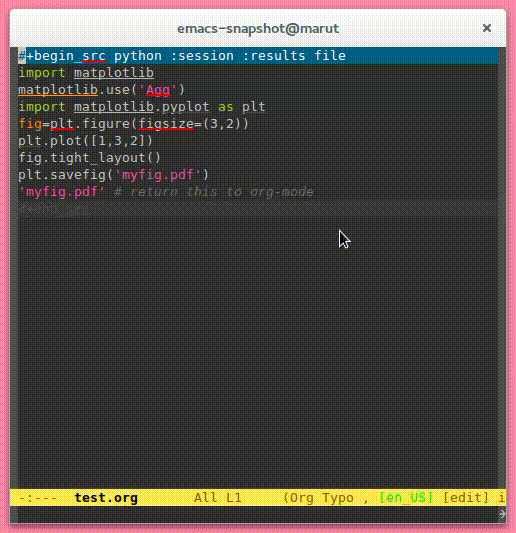
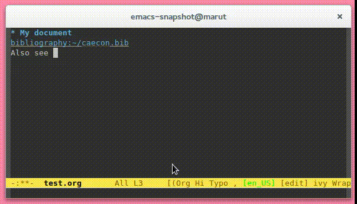

Org mode combined with babel allows users to execute code from within an Org mode document
babel
[]
A system for managing references and citations in Org mode.
org-ref was written by John Kitchin.
helm-bibtex by Titus von der Malsburg
[]